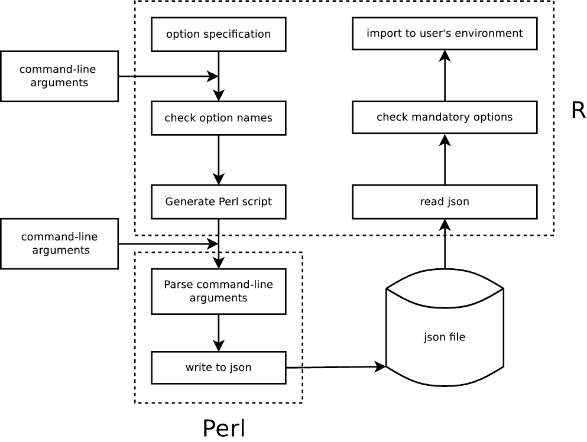

vignettes/GetoptLong.Rmd
GetoptLong.RmdThere are already several R packages which parse command-line arguments such as getopt, optparse, argparse, docopt. Here GetoptLong is another command-line argument parser (actually it was developed very early, the first CRAN version was in 2013) which wraps the powerful Perl module Getopt::Long. GetoptLong package also provides some adaptations for easier use in R.
Using GetoptLong is simple especially for users having Perl experience (Oops, age exposed :)) because the specification is almost the same as in Perl. The original website of Getopt::Long is always your best reference.
Note: to use this package, Perl should be installed.
The GetoptLong R package automatically generates a Perl script according to the specifications in the R script. Later the Perl script is executed with the command-line arguments that user specified. The options are parsed and saved into a json file. Finally R reads back the json file and formats them as R variables.
Following figure shows how the R package works for parsing the command-line arguments.

The following example gives you some feels of using GetoptLong package. The following code is saved in to an R script named foo.R.
library(GetoptLong)
cutoff = 0.05
GetoptLong(
"number=i", "Number of items.",
"cutoff=f", "Cutoff for filtering results.",
"verbose", "Print message."
)The R script can be executed as:
~\> Rscript foo.R --number 4 --cutoff 0.01 --verbose
~\> Rscript foo.R --number=4 --cutoff=0.01 --verbose
~\> Rscript foo.R -n 4 -c 0.01 -v
~\> Rscript foo.R -n 4 --verboseIn this example, number is a mandatory option and it should only be in integer mode. cutoff is optional and it already has a default value 0.05. verbose is a logical option. If parsing is successful, two variables number and verbose will be imported into the working environment with the specified values. Value for cutoff will be updated if it is specified in command-line.
Data types are automatically checked. E.g., if cutoff is specified with a character, an error will be thrown.
The option usage triggered by --help is automatically generated. There are two styles:
The one-column style:
Usage: Rscript foo.R [options]
Options:
--number, -n integer
Number of items.
--cutoff, -c numeric
Cutoff for filtering results.
[default: 0.05]
--verbose
Print message.
--help, -h
Print help message and exit.
--version
Print version information and exit.
Or the two-column style:
Usage: Rscript foo.R [options]
Options:
--number, -n Number of items.
[type: int]
--cutoff, -c Cutoff for filtering results.
[type: num] [default: 0.05]
--verbose Print message.
--help, -h Print help message and exit.
--version Print version information and exit. You can find the short option names (in single letters) are automatically added. The information of default values is added as well.
The specification can also be set as a template where the specifications are marked by <>.
spec = "
This is an example of using template to specify options.
Usage: Rscript foo.R [options]
Options:
<number=i> Number of items.
<cutoff=f> Cutoff for filtering results.
<verbose> Print messages.
Contact: name@address
"
GetoptLong(spec, template_control = list(opt_width = 21))The parameter opt_width controls the maximal width of the option description (i.e., --number, -n integer, --cutoff, -c numeric and --verbose).
Calling Rscript foo.R --help generates the following message:
This is an example of using template to specify options.
Usage: Rscript foo.R [options]
Options:
--number, -n integer Number of items.
--cutoff, -c numeric Cutoff for filtering results.
--verbose Print messages.
Contact: name@address There are several advantages compared to other command-line argument parser packages. The major advantage comes from the Getopt::Long Perl module which actually parses the options. The Getopt::Long module provides a flexible, smart and compact way for specifying command-line arguments. The major features are:
-s 24 -s24or
--size 24 --size=24 -size 24 -size=24-a -b -c -abs--length, --height are the same.length|height=fl and h are unique, --length, --height, -l and -h set the same option.length|height=f --length --height -l -hlength=i a single integer scalar
name=s a single character scalarcan be specified as:
--length 1 --name aor
length=i@ a integer vector
name=s@ a character vector
length=i{2,} a integer vector, at least two elements
name=s{2,} a character vector, at least two elementscan be specified as:
--length 1 2 3 --name a b cor
length=i% name-value pair, values should be integers
name=s% name-value pair, values should be charactersto be specified as:
--length foo=1 bar=3 --name foo=a bar=bThe features from R part are:
It automaticlly generates option usage in two styles. The data type and default value of options are automatically detected and included.
It supports specifying the usage in a template which allows more complex text of option usage.
It allows grouping options.
It provides a natural and convenient way to specify defaults.
Each specifier in options consists of two parts: the name specification and the argument specification:
length|size|l=i@Here length|size|l is a list of alternative names separated by |. The remaining part is argument specification which defines the mode and amount of arguments.
Specify any of alternative option name from command-line is ok and it doesn’t matter whether using one or two slash in front of the option name. Sometimes you even don’t need to specify complete option names, you only need to make sure the partial name match is unique. If the partial match is not uniqe, it will throw an error. For above example, we can specify the argument like:
~\> Rscript foo.R --length 1
~\> Rscript foo.R --length=1 # adding "=" is also ok
~\> Rscript foo.R -len 1
~\> Rscript foo.R -lengt 1 # this is also ok, but not suggested
~\> Rscript foo.R --size 1
~\> Rscript foo.R -l 1Options for argument specification are:
!: taking no argument. Options are logical. You can set its oposite value by adding it with no or no-. E.g., foo! allows --foo as well as --nofoo and --no-foo.=type[desttype][repeat]: options should have arguments (or options should have values specified). E.g. tag=i@ where i corresponds to type, and @ corresponds to desttype, or tag=i{2,} where {2,} corresponds to repeat.Please note :[type][desttype] is not supported here. We use another way to define mandatory options and optional options. If you don’t know what it is, just ignore this paragraph.
Available type options are:
s: stringsi: integersF: real numberso: extended integer, an octal string (0 followed by 0, 1 .. 7), or a hexadecimal string (0x followed by 0 .. 9, A .. F, case insensitive), or a binary string (0b followed by a series of 0 and 1).Available desttype settings are:
@: array, allow more than one arguments for an option.%: hash, allow arguments like name=value.Available repeat settings are formatted as {\d,\d}. Note there is no space character inside:
{2}: exactly 2 arguments for an option.{2,}: at least 2 arguments for an option.{,4}: at most 4 arguments for an option.{2,5}: minimal 2 and maximal 5 arguments for an option.Note desttype and repeat cannot be used at the same time.
In the Perl module, tag=i@ only allows, e.g., specification of --tag 1 --tag 2 while --tag 1 2 is not allowed which is only possible by tag=i{1,}. In the R package, we made some adjustment and allow tag=i@ to also accept -tag 1 2. Similarly, tag=i% only allows --tag name1=value1 --tag name2=value2 in the Perl module. In the R package, it also allows --tag name1=value1 name2=value2.
Following table contains examples for each type of option specification:
| Options | Command-line arguments |
Value of tag
|
|---|---|---|
tag=i
|
–tag 1
|
1
|
–tag=1
|
1
|
|
-t 1
|
1
|
|
–tag 1 –tag 2
|
2. Here only take the last one
|
|
–tag 0.1
|
Error: Value “0.1” invalid for option tag (number expected) | |
–tag a
|
Error: Value “a” invalid for option tag (number expected) | |
–tag
|
Error: Option tag requires an argument | |
| no argument | tag is mandatory, please specify it | |
tag=s
|
–tag 1
|
“1”. Here double quote is used because it is specified as a string.
|
–tag 0.1
|
“0.1”
|
|
–tag a
|
“a”
|
|
tag=f
|
–tag 1
|
1
|
–tag 0.1
|
0.1
|
|
–tag a
|
Error: Value “a” invalid for option tag (real number expected) | |
tag=o
|
–tag 1
|
1
|
–tag 0b001001
|
9
|
|
–tag 0721
|
465
|
|
–tag 0xaf2
|
2802
|
|
-tag 0.1
|
Error: Value “0.1” invalid for option tag (extended number expected) | |
–tag a
|
Error: Value “a” invalid for option tag (extended number expected) | |
tag
|
–tag 1
|
TRUE
|
–tag 0
|
TRUE, it doesn’t care the value for the option.
|
|
–tag 0.1
|
TRUE
|
|
–tag a
|
TRUE
|
|
–tag
|
TRUE
|
|
| no argument |
FALSE
|
|
tag!
|
–tag
|
TRUE
|
–no-tag
|
FALSE
|
|
no argument, no default for tag
|
FALSE
|
|
tag=i@
|
–tag 1
|
1
|
–tag 1 2
|
c(1, 2)
|
|
–tag 1 –tag 2
|
c(1, 2)
|
|
–tag=1 –tag=2
|
c(1, 2)
|
|
tag=i%
|
–tag 1
|
Error: Option tag, key “1”, requires a value |
–tag foo=1 –tag bar=2
|
list(foo = 1, bar = 2), tag is a list.
|
|
–tag foo=1 bar=2
|
list(foo = 1, bar = 2), tag is a list.
|
|
tag=i{2}
|
–tag 1
|
Error: Insufficient arguments for option tag |
–tag 1 2
|
c(1, 2)
|
|
–tag 1 –tag 2
|
Error: Value “–tag” invalid for option tag | |
tag=i{2,}
|
–tag 1
|
Error: Insufficient arguments for option tag |
–tag 1 2
|
c(1, 2)
|
|
–tag 1 2 3
|
c(1, 2, 3)
|
|
tag=i{,2}
|
–tag 1
|
1
|
–tag 1 2
|
c(1, 2)
|
|
–tag 1 2 3
|
c(1, 2)
|
Options will be imported into user’s environment as R variables by default. The first option name in all alternative names will be taken as the name of the variable, (e.g. for specification of length|size=s, length will be used as the variable name.), which means, it must be a valid R variable name. Any definition of these variables in front of GetoptLong() will be treated as default values for the corresponding options. If options already have default values, they are optional in command-line. If the variable is defined as a function before GetoptLong() is called, it is treated as undefined. Please note your option names should not start with the dot. Although it is valid for R variables but it is not allowed for Getopt::Long module.
For the following example:
library(GetoptLong)
cutoff = 0.05
GetoptLong(
"number=i{1,}", "Number of items.",
"cutoff=f", "Cutoff for filtering results.",
"param=s%", "Parameters specified by name=value pairs.",
"verbose", "Print message."
)
print(number)
print(cutoff)
print(param)
print(verbose)a calling from command-line:
Rscript foo.R --number 1 2 --param var1=a var2=b --verbosewill print
[1] 1 2
[1] 0.05
$var2
[1] "b"
$var1
[1] "a"
[1] TRUEThere are two ways to specify logical options, e.g., verbose and verbose!. verbose always takes FALSE as default and you cannot set default value for it, while you can set default for verbose!. E.g.:
verbose = TRUE
GetoptLong(
"verbose!", "Print message."
)If --verbose/--no-verbose is not specified, the variable verbose is TRUE. If --verbose is specified, verbose is TRUE and if --no-verbose is specified, verbose is FALSE.
If you don’t want to directly export options as variables, you can assign envir argument with an environment variable so that all the option values go there.
opt = new.env()
opt$cutoff = 0.05
GetoptLong(
"number=i@", "Number of items.",
"cutoff=f", "Cutoff for filtering results.",
"param=s%", "Parameters specified by name=value pairs.",
"verbose", "Print message.",
envir = opt
)
print(as.list(opt))A calling from the command-line:
Rscript foo.R --number 1 2 --param var1=a var2=b --verbosewill print
$cutoff
[1] 0.05
$number
[1] 1 2
$param
$param$var1
[1] "a"
$param$var2
[1] "b"
$verbose
[1] TRUEIt also supports multiple words as an option name. Note, in the option specification, the name of the option should always be in the format of a valid R variable name, because it will be exported as a real variable. In the command line, you can use - to connect words and it will be converted to _ internally. Check the following example:
# or a default can be set for `bar_value`
# bar_value = 2
GetoptLong(
"bar_value=i", "Some value."
)
print(bar_value)A calling from the command-line:
Rscript foo.R --bar-value 10will print
[1] 1Of course, you can also specify the option by:
Rscript foo.R --bar_value 1A second example of using multiple-word as a logical option name:
GetoptLong(
"show_messages!", "Whether to show messages?"
)
print(show_messages)Rscript foo.R --show-messages[1] TRUERscript foo.R --no-show-messages[1] FALSEhelp is a reserved option, which means, you can not use it as yours.
Option usage is automatically generated and can be retrieved by setting --help in the command. In following example, I create an option specification that contains all types of options (with long descriptions):
GetoptLong(
"count=i", paste("This is a count. This is a count. This is a count.",
"This is a count. This is a count. This is a count."),
"number=f", paste("This is a number. This is a number. This is a number.",
"This is a number. This is a number. This is a number."),
"array=f@", paste("This is an array. This is an array. This is an array.",
"This is an array. This is an array. This is an array."),
"hash=s%", paste("This is a hash. This is a hash. This is a hash.",
"This is a hash. This is a hash. This is a hash."),
"verbose!", "Whether show messages",
"flag", "a non-sense option"
)The option usage is as follows. Here, for example, the single-letter option -c for --count is automatically extracted while not for --help because h matches two options.
Usage: Rscript foo.R [options]
Options:
--count, -c integer
This is a count. This is a count. This is a count. This is a count. This is
a count. This is a count.
--number, -n numeric
This is a number. This is a number. This is a number. This is a number. This
is a number. This is a number.
--array, -a [numeric, ...]
This is an array. This is an array. This is an array. This is an array. This
is an array. This is an array.
--hash {name=character, ...}
This is a hash. This is a hash. This is a hash. This is a hash. This is a
hash. This is a hash.
--verbose, -no-verbose
Whether show messages
[default: off]
--flag, -f
a non-sense option
--help
Print help message and exit.
--version
Print version information and exit.
If default values for options are provided, they are properly inserted to the usage message.
count = 1
number = 0.1
array = c(1, 2)
hash = list("foo" = "a", "bar" = "b")
verbose = TRUE
GetoptLong(
...
)Usage: Rscript foo.R [options]
Options:
--count, -c integer
This is a count. This is a count. This is a count. This is a count. This is
a count. This is a count.
[default: 1]
--number, -n numeric
This is a number. This is a number. This is a number. This is a number. This
is a number. This is a number.
[default: 0.1]
--array, -a [numeric, ...]
This is an array. This is an array. This is an array. This is an array. This
is an array. This is an array.
[default: 1, 2]
--hash {name=character, ...}
This is a hash. This is a hash. This is a hash. This is a hash. This is a
hash. This is a hash.
[default: foo=a, bar=b]
--verbose, -no-verbose
Whether show messages
[default: on]
--flag, -f
a non-sense option
--help
Print help message and exit.
--version
Print version information and exit.
The global parameters help_style can be set to two-column to change to another style:
GetoptLong.options(help_style = "two-column")
# specifying the defaults
GetoptLong{
...
}Usage: Rscript foo.R [options]
Options:
--count, -c This is a count. This is a count. This is a count.
[type: int] This is a count. This is a count. This is a count.
[default: 1]
--number, -n This is a number. This is a number. This is a
[type: num] number. This is a number. This is a number. This is
a number.
[default: 0.1]
--array, -a This is an array. This is an array. This is an
[type: [num, ...]] array. This is an array. This is an array. This is
an array.
[default: 1, 2]
--hash This is a hash. This is a hash. This is a hash. This
[type: {name=chr, ...}] is a hash. This is a hash. This is a hash.
[default: foo=a, bar=b]
--verbose, -no-verbose Whether show messages
[default: on]
--flag, -f a non-sense option
--help Print help message and exit.
--version Print version information and exit. When options are specified as name-value pairs, these sub options can be documented as follows. Note the specifications of e.g. foo$name1 are only for the usage message.
foo = list(a = 1, b = 2)
GetoptLong(
"foo=i%", paste("This is foo. This is foo. This is foo. This is foo.",
"This is foo. This is foo. This is foo. This is foo."),
"foo$name1", paste("name1 in foo. name1 in foo. name1 in foo. name1 in foo.",
"name1 in foo. name1 in foo. name1 in foo. name1 in foo."),
"foo$name2", paste("name2 in foo. name2 in foo. name2 in foo. name2 in foo.",
"name2 in foo. name2 in foo. name2 in foo. name2 in foo."),
"bar=s%", paste("This is bar. This is bar. This is bar. This is bar.",
"This is bar. This is bar. This is bar. This is bar."),
"bar$name3", paste("name3 in bar. name3 in bar. name3 in bar. name3 in bar.",
"name3 in bar. name3 in bar. name3 in bar. name3 in bar."),
"bar$name4", paste("name4 in bar. name4 in bar. name4 in bar. name4 in bar.",
"name4 in bar. name4 in bar. name4 in bar. name4 in bar.")
)Usage: Rscript foo.R [options]
Options:
--foo, -f {name=integer, ...}
This is foo. This is foo. This is foo. This is foo. This is foo. This is
foo. This is foo. This is foo.
[default: a=1, b=2]
Sub named options:
name1=integer name1 in foo. name1 in foo. name1 in foo. name1 in foo. name1
in foo. name1 in foo. name1 in foo. name1 in foo.
name2=integer name2 in foo. name2 in foo. name2 in foo. name2 in foo. name2
in foo. name2 in foo. name2 in foo. name2 in foo.
--bar, -b {name=character, ...}
This is bar. This is bar. This is bar. This is bar. This is bar. This is
bar. This is bar. This is bar.
Sub named options:
name3=character name3 in bar. name3 in bar. name3 in bar. name3 in bar. name3
in bar. name3 in bar. name3 in bar. name3 in bar.
name4=character name4 in bar. name4 in bar. name4 in bar. name4 in bar. name4
in bar. name4 in bar. name4 in bar. name4 in bar.
--help, -h
Print help message and exit.
--version, -v
Print version information and exit.
And the two-column style for the sub options.
GetoptLong.options(help_style = "two-column")
GetoptLong{
...
}Usage: Rscript foo.R [options]
Options:
--foo, -f This is foo. This is foo. This is foo. This is foo.
[type: {name=int, ...}] This is foo. This is foo. This is foo. This is foo.
[default: a=1, b=2]
Sub named options:
name1=int name1 in foo. name1 in foo. name1 in foo.
name1 in foo. name1 in foo. name1 in foo.
name1 in foo. name1 in foo.
name2=int name2 in foo. name2 in foo. name2 in foo.
name2 in foo. name2 in foo. name2 in foo.
name2 in foo. name2 in foo.
--bar, -b This is bar. This is bar. This is bar. This is bar.
[type: {name=chr, ...}] This is bar. This is bar. This is bar. This is bar.
Sub named options:
name3=chr name3 in bar. name3 in bar. name3 in bar.
name3 in bar. name3 in bar. name3 in bar.
name3 in bar. name3 in bar.
name4=chr name4 in bar. name4 in bar. name4 in bar.
name4 in bar. name4 in bar. name4 in bar.
name4 in bar. name4 in bar.
--help, -h Print help message and exit.
--version, -v Print version information and exit. Extra text such head and foot of the usage message can be set with help_head and help_foot arguments:
GetoptLong(
help_head = "This is a demonstration of adding usage head and foot.",
"number=i", "Number of items.",
"cutoff=f", "Cutoff for filtering results.",
"verbose", "Print message.",
help_foot = "Please contact name@address."
)This is a demonstration of adding usage head and foot.
Usage: Rscript foo.R [options]
Options:
--number, -n integer
Number of items.
--cutoff, -c numeric
Cutoff for filtering results.
--verbose
Print message.
--help, -h
Print help message and exit.
--version
Print version information and exit.
Please contact name@address.The options in the usage text can be grouped by setting separator lines. The separator line should contain two elements: the separator and the description. The separator can be any character in -+=#% with any length.
count = 1
array = c(0.1, 0.2)
GetoptLong(
"--------", "Binary options:",
"verbose!", "Whether show messages",
"flag", "a non-sense option",
"-------", "Single-value options:",
"count=i", paste("This is a count. This is a count. This is a count.",
"This is a count. This is a count. This is a count."),
"number=f", paste("This is a number. This is a number. This is a number.",
"This is a number. This is a number. This is a number."),
"--------", paste("Multiple-vlaue options: long text long text long text",
" long text long text long text long text long text"),
"array=f@", paste("This is an array. This is an array. This is an array.",
"This is an array. This is an array. This is an array."),
"hash=s%", paste("This is a hash. This is a hash. This is a hash.",
"This is a hash. This is a hash. This is a hash."),
"-------", "Other options:"
)Usage: Rscript foo.R [options]
Binary options:
--verbose, -no-verbose
Whether show messages
[default: off]
--flag, -f
a non-sense option
Single-value options:
--count, -c integer
This is a count. This is a count. This is a count. This is a count. This is
a count. This is a count.
[default: 1]
--number, -n numeric
This is a number. This is a number. This is a number. This is a number. This
is a number. This is a number.
Multiple-vlaue options: long text long text long text long text long text long
text long text long text
--array, -a [numeric, ...]
This is an array. This is an array. This is an array. This is an array. This
is an array. This is an array.
[default: 0.1, 0.2]
--hash {name=character, ...}
This is a hash. This is a hash. This is a hash. This is a hash. This is a
hash. This is a hash.
Other options:
--help
Print help message and exit.
--version
Print version information and exit.
And the two-column style for the grouped options.
GetoptLong.options(help_style = "two-column")
GetoptLong{
...
}Usage: Rscript foo.R [options]
Binary options:
--verbose, -no-verbose Whether show messages
[default: off]
--flag, -f a non-sense option
Single-value options:
--count, -c This is a count. This is a count. This is a count. This is a
[type: int] count. This is a count. This is a count.
[default: 1]
--number, -n This is a number. This is a number. This is a number. This is
[type: num] a number. This is a number. This is a number.
Multiple-vlaue options: long text long text long text long text long text long
text long text long text
--array, -a This is an array. This is an array. This is an
[type: [num, ...]] array. This is an array. This is an array. This is
an array.
[default: 0.1, 0.2]
--hash This is a hash. This is a hash. This is a hash. This
[type: {name=chr, ...}] is a hash. This is a hash. This is a hash.
Other options:
--help Print help message and exit.
--version Print version information and exit. The global option GetoptLong.options$help_width controls the maximal width of the usage message.
The specification can also be set as a template which provides more flexibilities for the usage message. Here option specifications are maked by <> where the specifications will be extracted and the text will be replaced by the option description. The mark can be set by GetoptLong.options$template_tag global option.
The option descriptions have different widths. To properly align the text, you need to manually adjust the width (spaces are filled if the width is larger than the option description) by setting opt_width parameter via template_control argument. See the following example.
GetoptLong("
This is a demonstration of using template as the option specification.
Usage: Rscript foo.R [options]
Binary options:
<verbose!> Whether show messages
<flag> A non-sense option
Single-value options:
<count=i> This is a count. This is a count.
<number=f> This is a number. This is a number.
Multiple-vlaue options:
<array=f@> This is an array. This is an array.
<hash=s%> This is a hash. This is a hash.
Questions, please contact your.name@email
", template_control = list(opt_width = c(verbose = 23, flag = 23,
count = 22, number = 22,
array = 30, hash = 30)
))This is a demonstration of using template as the option specification.
Usage: Rscript foo.R [options]
Binary options:
--verbose, -no-verbose Whether show messages
--flag, -f A non-sense option
Single-value options:
--count, -c integer This is a count. This is a count.
--number, -n numeric This is a number. This is a number.
Multiple-vlaue options:
--array, -a [numeric, ...] This is an array. This is an array.
--hash {name=character, ...} This is a hash. This is a hash.
Questions, please contact your.name@email If the option explanation lies in more than one lines, in front from the second line, you should add a tag in form of <#tag> where tag is the option name of the current option block, so that proper spaces in front of the text can be calculated and the text will be properly aligned. See the following example:
GetoptLong("
Usage: Rscript foo.R [options]
<count=i{2,}> This is a count. This is a count. This is a count.
<#count> This is a count. This is a count.
<number=f> This is a number. This is a number. This is a number.
<#number> This is a number. This is a number.
", template_control = list(opt_width = c(count = 28, number = 28))
)Usage: Rscript foo.R [options]
--count, -c [integer, ...] This is a count. This is a count. This is a count.
This is a count. This is a count.
--number, -n numeric This is a number. This is a number. This is a number.
This is a number. This is a number. version is also a reserved option.
Version should be stored in a variable VERSION before the call of GetoptLong(), then --version prints the corresponding version value.
VERSION = "0.0.1"
GetoptLong(
"tag=i", "...",
)~\> Rscript foo.R --version
0.0.1Configuration of Getopt::Long can be set by GetoptLong.options("config"):
GetoptLong.options("config" = "bundling")
GetoptLong.options("config" = c("no_ignore_case", "bundling"))With different configurations, it can support more types of option specifications:
-a -b -c -abc
-s 24 -s24 -s=24Please refer to website of Getopt::Long for more information.
In some conditions that path of binary Perl is not in the PATH environment variable and you do not have permission to modify PATH. You can specify your Perl path from command line like:
~\> Rscript foo.R -a -b -c -- /your/perl/bin/perlSince arguments following after -- will be ignored by Getopt::Long, we take the first argument next to -- as the path of user-specified Perl path.
When in an interactive R session, arguments can be set when calling source_script(), so it would be convinient to load external R scripts with different comand-line arguments. E.g.:
source_script("foo.R", argv_str = "--cutoff 0.01 --input file=foo.txt --verbose")R version 4.1.2 (2021-11-01)
Platform: x86_64-apple-darwin17.0 (64-bit)
Running under: macOS Big Sur 10.16
Matrix products: default
BLAS: /Library/Frameworks/R.framework/Versions/4.1/Resources/lib/libRblas.0.dylib
LAPACK: /Library/Frameworks/R.framework/Versions/4.1/Resources/lib/libRlapack.dylib
locale:
[1] C/UTF-8/C/C/C/C
attached base packages:
[1] stats graphics grDevices utils datasets methods base
other attached packages:
[1] GetoptLong_1.1.0 knitr_1.37
loaded via a namespace (and not attached):
[1] magrittr_2.0.1 rjson_0.2.21 R6_2.5.1
[4] ragg_1.2.1 rlang_0.4.12 fastmap_1.1.0
[7] highr_0.9 stringr_1.4.0 tools_4.1.2
[10] xfun_0.29 jquerylib_0.1.4 htmltools_0.5.2
[13] systemfonts_1.0.3 yaml_2.2.1 digest_0.6.29
[16] rprojroot_2.0.2 pkgdown_2.0.2 crayon_1.4.2
[19] textshaping_0.3.6 purrr_0.3.4 GlobalOptions_0.1.2
[22] sass_0.4.0 fs_1.5.2 memoise_2.0.1
[25] cachem_1.0.6 evaluate_0.14 rmarkdown_2.11
[28] stringi_1.7.6 compiler_4.1.2 bslib_0.3.1
[31] desc_1.4.0 jsonlite_1.7.2